Thin Crust Quinoa Pizza | Complete Protein | Oil-Free
An unconditional crust with crispy golden edges, soft and chewy on the inside, leaving you with a texture and taste that makes you want more — like “Back OFF, it’s mine!” more. Plus, the crust/bread has just four simple ingredients, including water and spices. It is a terrific and EASY stand-in for any wheat-laden variety, and it packs a substantial protein punch! As the title indicates, this recipe is made with quinoa, so if you’re not a fan of the seed, you may want to consider another healthy variation. But I will say that the rinsing, soaking, and addition of Italian seasoning really helped to tame the strong taste of quinoa.
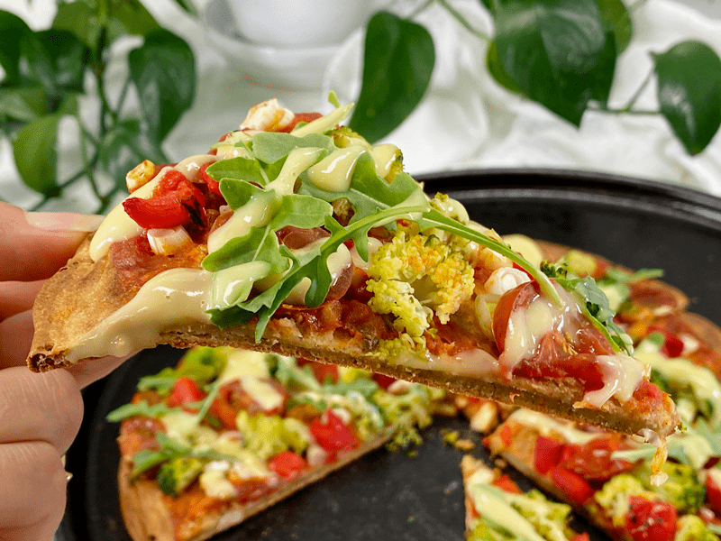
If you are feeding a larger group or wish to freeze some for later use, double all the ingredients in the recipe and follow the recipe instructions as written, dividing the dough into two pans. If you like the idea of making personal-sized pizza crusts, you could make two out of one batch. Personally, I love this idea.
Techniques and Tips
Rinsing the Quinoa
- As it grows, the seed is coated with a dark, almost black layer of saponin, which has a bitter, soapy taste.
- Saponin is the plant’s natural defense against insects, birds, and other small animals that might want to eat it on the stalk.
- Before quinoa can be eaten, the saponin must be washed off. When harvested, this layer is washing away before going to market, but it is still a good idea to rinse well to catch any existing residue.
Blending
- I found that making the batter in the blender was better than using a food processor, where it seemed like the seeds just rode around and around laughing as if they were on an amusement park ride.
- Blend until creamy and no signs of quinoa lumps are visible.
The Cooking Pan
- Baking in a cast-iron pan makes an audibly crispy crust for your flavorful assortment of toppings.
- Here’s the trick with cast iron — first off, it needs to be well seasoned. If you are unsure of how to do that, click (here). Secondly, you need to preheat the pan before adding the batter, as this will help the crust cook evenly and give it a nice crunch.
- In my experience, with my cast iron, I didn’t need to use any oil on the pan to prevent sticking. If you don’t have a cast-iron pan, line a baking sheet with parchment paper and spray the parchment paper with oil.
- I don’t recommend using a knife to cut the pizza in the pan; it might mar your cast iron’s surface (or any other baking pan). Instead, after loosening the edges, use a spatula to partially lift the pizza out of the pan, then cut a wedge using a pair of standard household scissors or kitchen shears.
Adding Toppings
- When adding your own favorite toppings, the vegetables should be cooked before arranging them in a single layer on top of the sauce. I use Amie Sue’s Groovy Cheese Sauce on our pizzas, adding it right when the pizza comes out of the oven.
- For an extra hit of flavor, sprinkle freshly chopped herbs (oregano, basil, thyme) over the hot pizza just before serving.
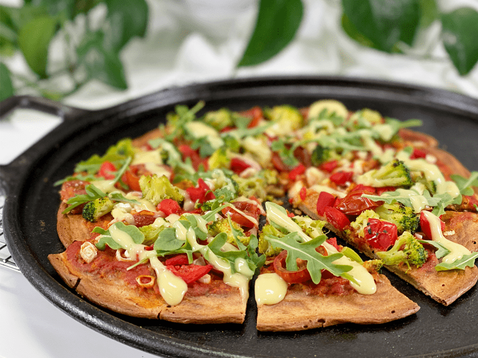
What Color of Quinoa Should I Use?
- White quinoa has the most delicate taste and the lightest texture.
- Red quinoa (which takes on a brownish hue when cooked) has a richer taste, slightly chewier and heartier texture, and somewhat nuttier flavor compared to white quinoa.
- Purple quinoa is very similar to red quinoa.
- Black quinoa has more of an earthy flavor than white quinoa and is ever so slightly sweeter.
Health Benefits of Quinoa
- Quinoa has a high oil content of polyunsaturated fatty acids. Because of this, it’s important to store quinoa in a cool place, and if you are going to store it for the long term, place it in airtight containers and remove the oxygen with oxygen absorbers. Removing the oxygen doesn’t stop the aging process of foods, but it extends its freshness exponentially.
- Quinoa is a complete protein, meaning that it contains all nine essential amino acids that our bodies cannot make on their own.
- Those with gluten sensitivities or wheat allergies can enjoy eating quinoa, as it contains no gluten or wheat.
I hope you enjoy this super-simple recipe. Please leave a comment below and be blessed, amie sue
 Ingredients
Ingredients
Yields 1 (10″ crust)
- 1 cup quinoa
- 1/2 cup water
- 1 Tbsp Italian seasoning
- 1/2 tsp sea salt
Preparation
Presoaking the Quinoa
- In a medium bowl, add equal amounts of quinoa and water + 2 Tbsp raw apple cider vinegar. Cover and soak for 8 hours on the counter.
- Drain and rinse the soaked quinoa.
Preparing the Crust Batter
- Add the drained and rinsed quinoa, 1/2 cup of water, Italian seasoning, and sea salt to a blender, blending until smooth.
- At first, you may be tempted to add more water,but trust the process; it will blend creamy.
- How much water gets drained from the soaked and rinsed quinoa may affect the consistency of the crust. If it appears too wet, add a few tablespoons of rinsed quinoa and blend. If it feels too dry, add a few tablespoons of water and blend. I didn’t have to do either, but keep this in mind.
- The batter makes 2 cups.
Baking the Crust
- Preheat the oven to 450 degrees (F), placing the cast iron pan in the oven to preheat it before adding the batter.
- Preheating the cast iron is key so that the crust cooks evenly. Don’t skip this step.
- lf you are using a standard baking pan, line it with parchment paper, and add some oil, spreading it around with your hands until evenly coated. DO NOT use wax paper; it will stick like crazy.
- Pour the crust batter into the hot pan and smooth it with the back of a spoon to reach the edges of the skillet (size depending).
- The key is to make sure you don’t spread it too thick or thin. Make sure that the center isn’t much thicker than the edges, or it will cook unevenly.
- The minute you start pouring, you should hear a sizzle as the batter meets the preheated pan (if using cast iron and no parchment paper).
- Bake the crust for 10 -12 minutes then flip pizza dough and bake for another 8 – 10 minutes.
- Remove from oven and top the pizza with whatever you want, then return it to the oven to bake for another 5-7 minutes.
- Let it rest for 5-10 minutes then serve.
- Store any leftovers, well wrapped, in the refrigerator for a day or so; freeze for longer storage. Bob and I can eat one whole pizza in one sitting, so good luck storing leftovers.
-
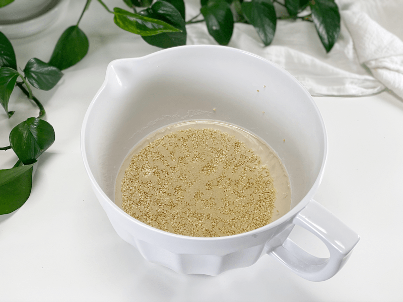
-
Soak the quinoa in water and 2 Tbsp of raw apple cider vinegar or lemon juice.
-
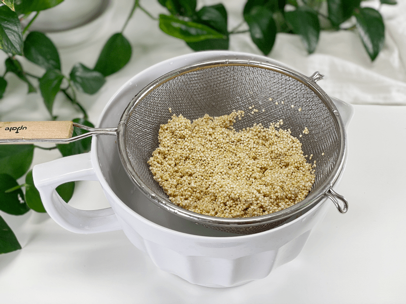
-
Drain and rinse after soaking. Tip – pour the soak water outside in the garden.
-
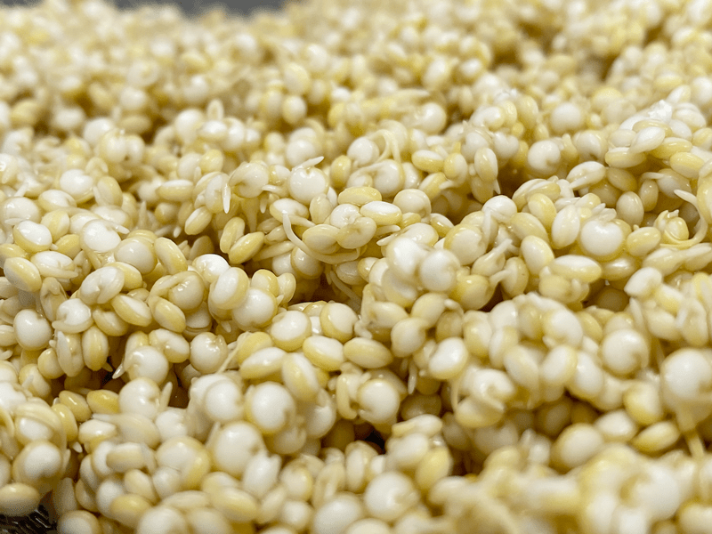
-
I thought you might like to see a close up photo of the soaked quinoa. I love the little tails they grow.
-
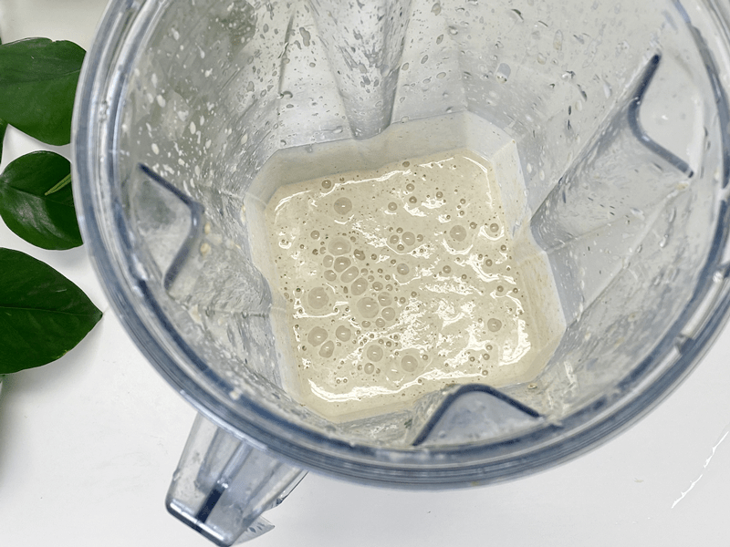
-
Add the ingredients in the blender and blend until smooth.
-
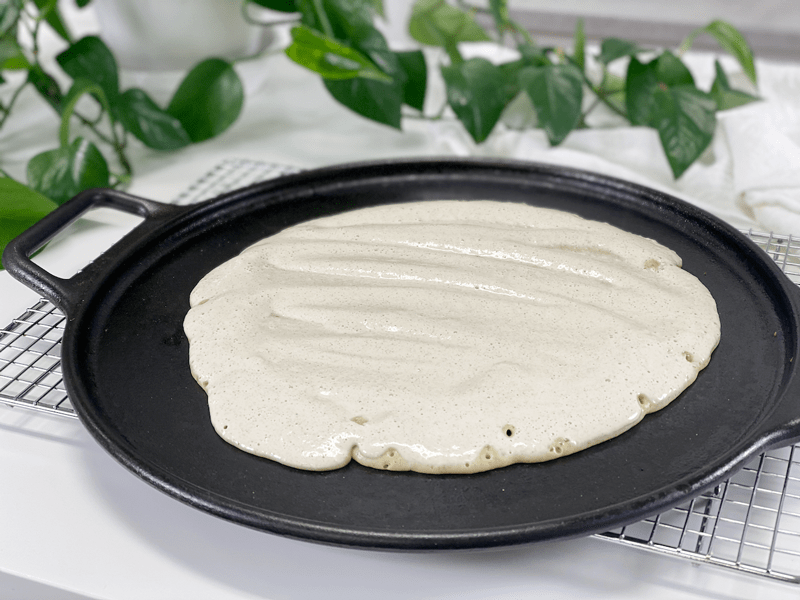
-
Pour the batter onto a preheated cast iron pan or a parchment lined baking pan.
-
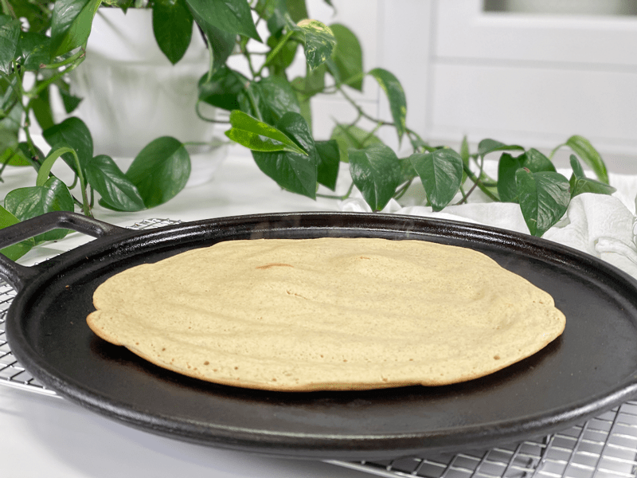
-
This is what it looked like after baking for 10 minutes.
-
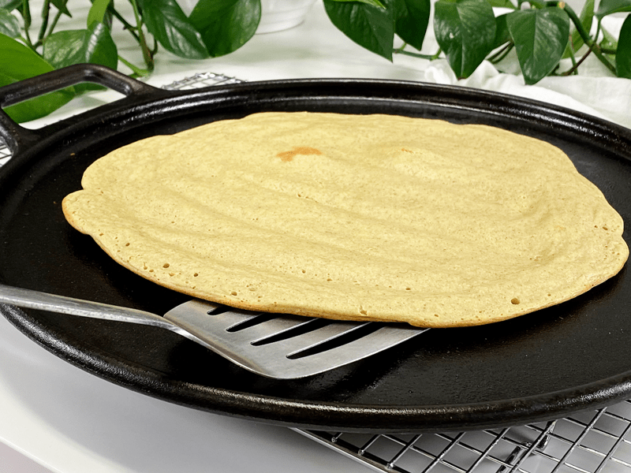
-
With a spatula, it flipped so easy.
-
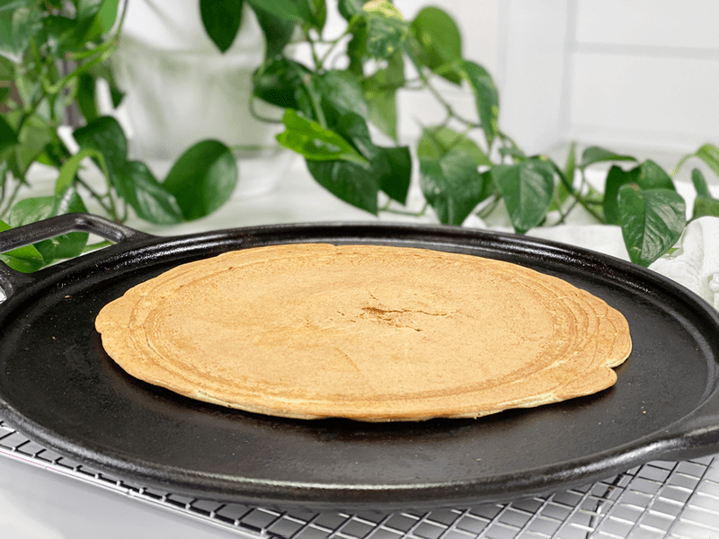
-
Here is the underneath side. It stuck just a wee little bit in the center, but with a seasoned cast iron pan, I didn’t need oil or parchment paper. Slide back into the oven for 8 minutes.
-
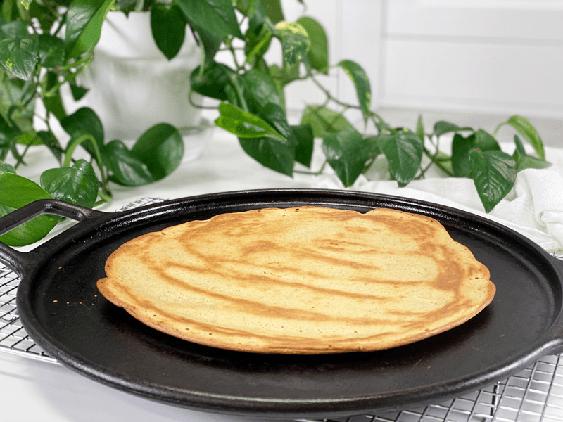
-
Once out, flip back over. Cool pattern, huh?
-
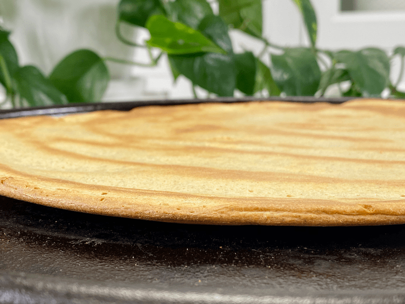
-
Sharing a close-up photo so you can see the thickness.
-
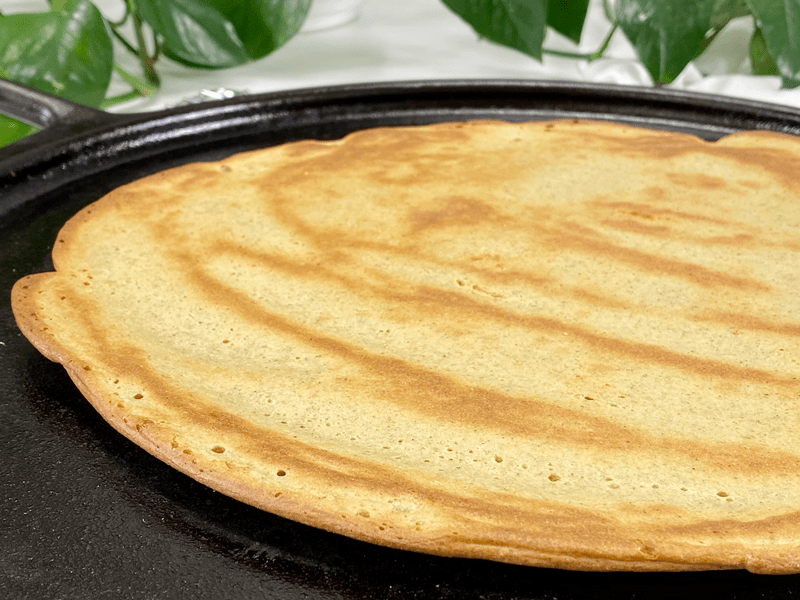
-
Here is a close-up of the top.
-
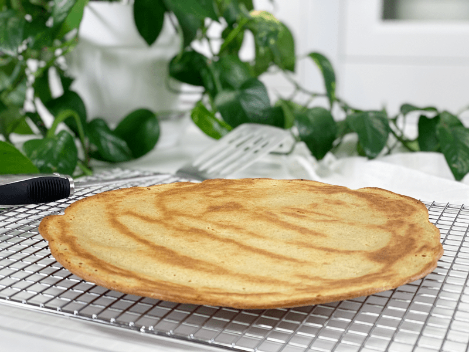
-
And here she is in all her glory. Ready and waiting for the pizza toppings!
-
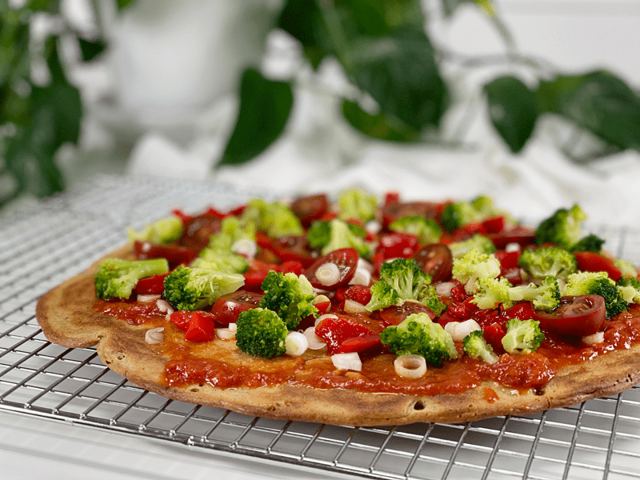
-
On today’s pizza, I added sliced green onions, steamed broccoli, sliced heirloom cherry tomatoes, and roasted red peppers.
-
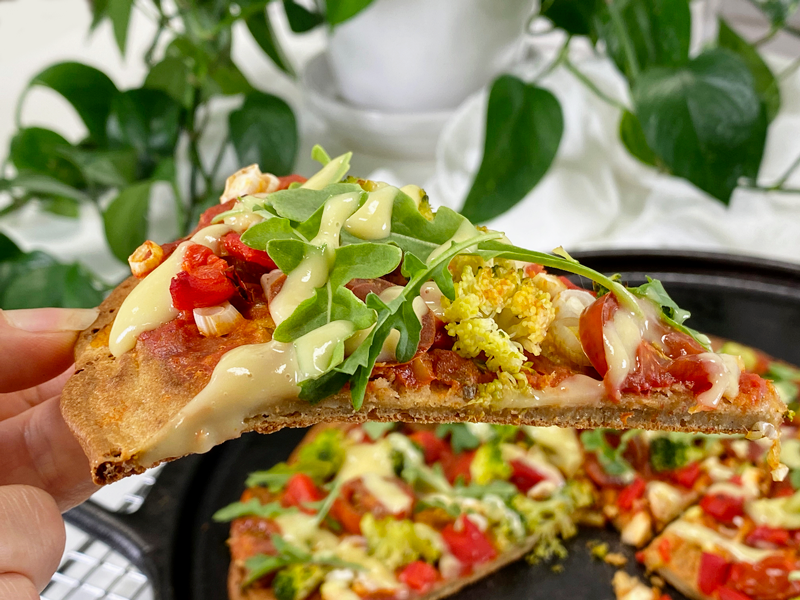
-
Once it was done baking, I added fresh baby arugula and my favorite vegan cheese sauce.
© AmieSue.com